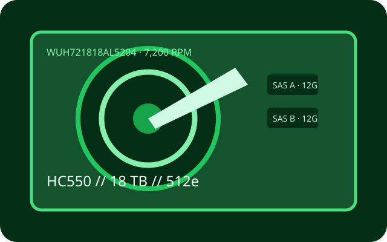

[ IDENTIFIED HDD // MODEL-SPECIFIC RECORD ]
WD Ultrastar DC HC550 WUH721818AL5204
18 TB 7,200-rpm helium enterprise drive. The AL5204 part number designates the SAS configuration, distinct from HC550 SATA variants.

Recorded specifications
| Exact model | WUH721818AL5204 (Ultrastar DC HC550) |
|---|---|
| Capacity | 18 TB |
| Sector format | 512e; check the delivered drive's reported format and firmware |
| Interface / ports | SAS-3, 12 Gbit/s, dual-port |
| Rotational speed | 7,200 rpm |
| Cache | 512 MB |
| Form factor | 3.5-inch, helium-sealed |
| Workload / reliability | Up to 550 TB/year workload rating and 2.5 million-hour MTBF (projected), per HC550 materials. Ratings are population measures and do not guarantee any unit's life. |
Host compatibility and qualification
- Requires SAS-capable HBA/RAID controller and SAS backplane/expander; SATA-only HBAs and SATA-only backplanes cannot operate it. Confirm 12G SAS signaling, dual-path support, 18 TB/LBA capacity, 512e firmware support and correct 3.5-inch tray/power.
- Check the ordering table for the exact SAS/SATA and sector SKU. The base HC550 family includes variants; connector fit or shared family name does not establish compatibility.
- Workload and MTBF are not warranties or per-unit predictions. Account for vibration, cooling and RAID rebuild risk; keep independent validated copies.
Manufacturer sources
- Western Digital — Ultrastar DC HC550 data sheetManufacturer technical specifications, interfaces and reliability ratings.
- Western Digital — HC550 part-number selectorManufacturer SKU table to distinguish SAS/SATA and sector-format variants.